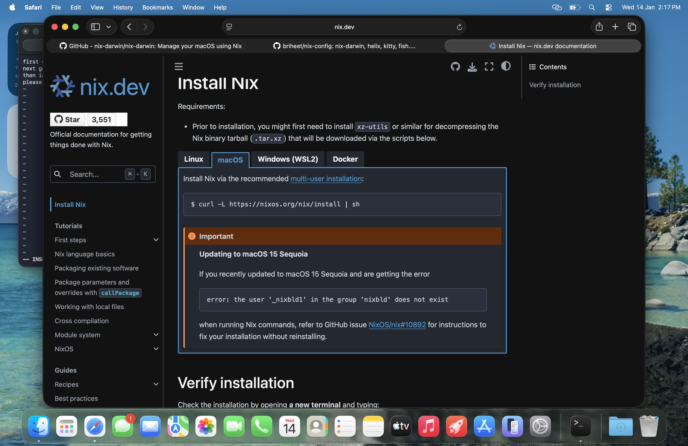
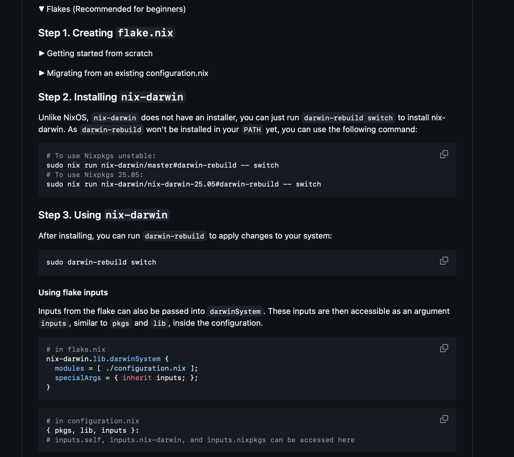

Intro
Hey, how’s it going? Hope you’re doing well ☺️
Recently, a bunch of my friends hopped onto either MacOS or NixOS.
MacOS ones either did due to the fact their orgs provided them apple silicon, their daddy suddenly became rich or they somehow found a sugar momma/dada.
NixOS ones did so either because they were long-time Arch users or just hopped onto the NixOS bandwagon because it’s cool (canon event).
So anyways they have been pestering me with the facts see me too weird things from terminal, helping not install a lot of things, managing my config, nix-shell tmp pulls, yade yade yada.
Hence they all asked me to setup their system or guide them to. Also my system had some previous issues due to which i had being facing some errors. Hence i thought i would do a clean system install and explain the way, the process.
Please note a few things before starting:
- This isn’t a nix-darwin home manager explanation blog. I would be explaining as little as possible because i have been looking for a job atm and dont want to spend much time. Would keep updating this in future with infos.
- To keep things short, i would be only doing Nix-darwin, i dont have a Linux installation with me atm, i am travelling to northeast rn.
Some of the things installed with this would be
- Kitty, Fish, Helix and a bunch of tools such as docker, hyperfine, etc. that i daily use.
Hell yeah then lets start looking into it.
Setting up the MacOS
So on a fresh install, we have a pretty clean system. You can also do this on a regular system if you cant do a fresh install but i am too autistic to continue on a regular one.
First thing to do is to open a terminal and type git and press enter. You would later need this to clone repo. Open spotlight and search terminal and you would get the default one. Now type You would see a pop up saying xcode commandline tools not installed. Please install it. Now you should have everything for a install from MacOS side.
Installing Nix
To setup Nix-darwin, we need to install nix first. This would do a bunch of things such as creating user, volumes, etc. This is the link 
Cool. During installation you may face a filesystem/vault error i suppose. I don’t but this popped up on Tahoe 26.2. The easy fix is too reboot the system. Solves it. This is the photo for that issue 
Setting up Nix-Darwin
Our next target would be setting up Nix-Darwin. For this head over to this repo Nix-darwin Repo.

Scrool down, you will find two options. Flakes and channels. We will only focus on flakes for this. Lets go through the 3 steps solo. 
Creating flake.nix
If you want to independently setup your own flake you can follow it. In this blog i would be using my own nix config. Its comes this flake, system and module separation with added home manager for configuration + macos configurations such as networking, docs, keybinds, etc.
Installing nix-darwin
I tried running ‘sudo nix run nix-darwin/master#darwin-rebuild – switch’ but somehow it always asked to add NIX-PATH and -I it which was cumbersome. Hence i moved to next move and combined it my system setup directly.
Using Nix-Darwin
Remember i told ya i had a issue with Nix path, hence i moved it directly to this part.
Now would like to explain you some things you need to know. If you are using a new configuration you can skip this paragraph and continue ahead. Else, please read this.
In my configuration, i have setup my home directory at ‘/Users/briheet’ and Github line and also here Github line 2. Also here Github link 3. You need to check your own home directory and change the name from ‘briheet’ to your own home directory name. This is a preferable setting. Now do this git clone command in your directory to clone the repo.
git clone https://github.com/briheet/nix-config
this is our nix-config we would be using. After cloning open the file with your text editor. The only text editor i know that was working was vim. Please use vim to edit the names in folder to your specific machine. Now, run this command to setup the stuff.
sudo nix run --extra-experimental-features "nix-command flakes" nix-darwin#darwin-rebuild -- switch --flake .#makima
This would show you 6 gb of data downloading. Let it be done. After its done, restart the system and use spotlight to open kitty. Kitty would open with fish and all the things loaded.
Now this is the paragraph if you went other way with new configuration. Follow the steps given in the repo, those are honestly pretty fine to setup. You would maybe face the issue with nix-command and flake. This is because they are experimental. You would need to pass something like ’nix run –extra-experimental-features “nix-command flakes” nix-darwin#darwin-rebuild – switch’ to make it work. Please use chatgpt to solve issues if so.
Finish installing
Your install should be finish and working fine. From next time whenever you made changes in your nix-config, always do
sudo darwin-rebuild switch --flake .
Also make sure you are into the directory where flake is located to make it rebuild.
Now go to Wallhaven and grab yourself some noice anime waifu pics for your wallpaper and set it up as background image in your system.
This is something what i ended up with for now.


End notes
Do rice, modify your system however you like, the whole point is to enjoy. For MacOS configs, visit this Site For Home Manager configs, visit this site Site or this for fast searching Site For Searching in Nix packages, visit this Site
Also please read through the config files, they are somewhat good built, well separated. For new configs files, added them in folder hierachy and update the home.nix file.
If you have any queries, please reach me out through X, discord or wherever you want. The IRL configs are there in my Resume. Happy ricing.
>> Home